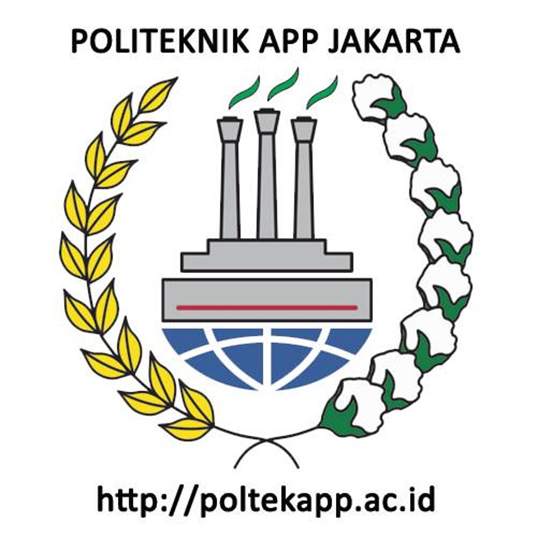
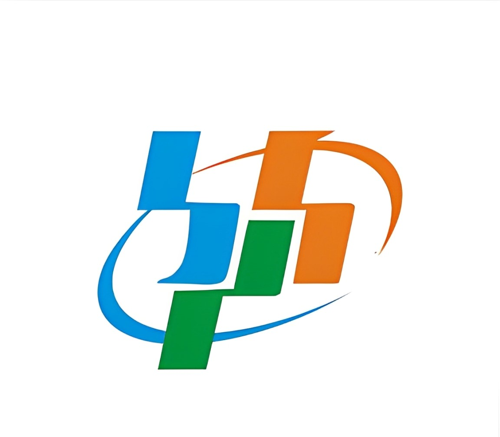

Analisis Hubungan Investasi dan Ekspor di Sektor Pertambangan Indonesia: Studi Kasus Tahun 2000–2023
Metode Penelitian Politeknik APP Jakarta
Author
Chrissostomus Sitohang
Published
January 5, 2025

Politeknik APP Jakarta
1 Pendahuluan
1.1 Latar belakang
Indonesia merupakan negara yang kaya akan sumber daya alam, khususnya dalam sektor pertambangan yang di mana telah menjadi salah satu pilar utama perekonomian nasional. Sektor pertambangan tidak hanya berkontribusi signifikan terhadap Produk Domestik Bruto (PDB), tetapi juga berperan penting dalam neraca perdagangan Indonesia melalui kegiatan ekspor. Begitupun dengan investasi yang dalam dua dekade terakhir, dinamika investasi di sektor pertambangan Indonesia telah mengalami fluktuasi yang menarik untuk dikaji, terutama dalam kaitannya dengan kinerja ekspor sektor ini.
Sejak diberlakukannya UU Minerba No. 4 Tahun 2009 dan berbagai regulasi lain yang mendukung, lanskap investasi pertambangan di Indonesia mengalami perubahan yang signifikan. Kebijakan hilirisasi yang diterapkan pemerintah, seperti kewajiban pengolahan dan pemurnian mineral di dalam negeri, serta pengubahan pola investasi di sektor ini. Perubahan regulasi ini tidak hanya mempengaruhi arus masuk investasi, tetapi juga berdampak pada pola dan volume ekspor produk pertambangan Indonesia.
Meski demikian, hubungan antara investasi dan ekspor sektor pertambangan di Indonesia masih memerlukan kajian lebih lanjut. Banyak pertanyaan yang muncul dibenak banyak orang, salah satunya apakah peningkatan investasi selama dua dekade terakhir telah diikuti oleh peningkatan yang signifikan dalam kinerja ekspor. Selain itu, faktor-faktor seperti regulasi, infrastruktur, dan dinamika pasar global perlu dipertimbangkan dalam memahami kompleksitas hubungan ini.
Berdasarkan latar belakang tersebut, penelitian ini bertujuan untuk menganalisis secara komprehensif bagaimana investasi pada sektor pertambangan mempengaruhi kinerja ekspor sektor ini selama periode 2003-2023. Pemahaman mendalam tentang hubungan ini tidak hanya penting bagi pengambilan kebijakan di sektor pertambangan, tetapi juga krusial untuk optimalisasi peran sektor pertambangan dalam perekonomian nasional di masa mendatang.
Dalam penelitian ini penulis mengambil objek penelitian dari Badan Pusat Statistik. Terdapat 2 variabel yang dijadikan objek penelitian antara lain Ekspor Sektor Pertambangan dan Investasi Sektor Pertambangan. Data yang digunakan adalah data yang bersifat time series yaitu dalam kurun waktu 2000-2023 dengan satuan yang telah diubah ke dalam USD guna untuk memudahkan penyetaraan mata uang secara internasional, data inilah yang kemudian menjadi objek penelitian.
1.2 Rumusan masalah
Bagaimana pola dan tren investasi serta ekspor pada sektor pertambangan Indonesia selama periode 2000-2023?
Apakah terdapat hubungan yang signifikan antara investasi di sektor pertambangan dan kinerja ekspor sektor tersebut di Indonesia?
1.3 Tujuan dan manfaat penelitian
Tujuan Penelitian 1. Memahami pola dan tren investasi serta ekspor pada sektor pertambangan Indonesia selama periode 2000-2023. 2. Mengidentifikasi hubungan antara investasi di sektor pertambangan dengan kinerja ekspor sektor tersebut di Indonesia.
Manfaat Penelitian Penelitian ini diharapkan memberikan manfaat berupa informasi tentang hubungan yang erat antara investasi dan Ekspor dalam sector pertambangan.
1.4 Package
Ini tidak wajib ada di tulisan anda tapi anda dapat menunjukkan Packages yang digunakan antara lain sebagai berikut:
library('readxl')library('tidyverse')
── Attaching core tidyverse packages ──────────────────────── tidyverse 2.0.0 ──
✔ dplyr 1.1.4 ✔ readr 2.1.5
✔ forcats 1.0.0 ✔ stringr 1.5.1
✔ ggplot2 3.5.1 ✔ tibble 3.2.1
✔ lubridate 1.9.3 ✔ tidyr 1.3.1
✔ purrr 1.0.2
── Conflicts ────────────────────────────────────────── tidyverse_conflicts() ──
✖ dplyr::filter() masks stats::filter()
✖ dplyr::lag() masks stats::lag()
ℹ Use the conflicted package (<http://conflicted.r-lib.org/>) to force all conflicts to become errors
library(dplyr)
2 Studi pustaka
Investasi Menurut KBBI, Investasi adalah penanaman uang atau modal dalam suatu perusahaan atau proyek untuk tujuan memperoleh keuntungan. Penanaman modal yang dimaksud dalam bentuk investasi ini dapat berasal dari dua sumber, yaitu penanaman modal dalam negeri dan penanaman modal luar negeri. Dalam konteks sektor pertambangan, investasi yang dimaksud dapat berbentuk modal fisik (seperti peralatan tambang dan infrastruktur) maupun modal manusia (seperti pelatihan tenaga kerja). Menurut Alvaro (2021), Investasi merupakan langkah awal kegiatan produksi dan menjadi faktor penting dalam meningkatkan pertumbuhan ekonomi, yang artinya investasi merupakan langkah awal kegiatan pembangunan ekonomi.
Ekspor Menurut Undang-Undang Nomor 17 Tahun 2006 tentang Kepabeanan, ekspor adalah kegiatan mengeluarkan barang dari daerah pabean. Kegiatan ini memiliki dampak yang sangat besar bagi suatu Negara, khusunya bagi Negara-negara berkembang. Ekspor adalah salah satu sector perekonomian yang memegang peranan penting melalui perluasan pasar antara beberapa negara, dimana dapat mengadakan perluasan dalam suatu industri, sehingga mendorong dalam industry lain, selanjutnya mendorong sektor lainnya dari perekonomian, salah satunya adalah sektor pertambangan.
3 Metode penelitian
3.1 Data
Tahun
Ekspor
Investasi
2000
62124,00
38,80
2001
56320,90
1317,80
2002
57158,80
852,90
2003
61058,20
770,60
2004
71584,60
728,70
2005
85659,90
1453,40
2006
100798,60
119,50
2007
114100,90
1001,00
2008
137020,40
700,60
2009
116510,00
2098,40
2010
157779,10
5275,50
2011
203496,60
10518,40
2012
190020,30
14736,30
2013
182551,80
23578,60
2014
175980,00
7805,81
2015
150366,30
7964,03
2016
145134,00
8776,00
2017
168828,20
25010,99
2018
180012,70
36138,59
2019
167683,00
27931,51
2020
163191,80
15760,24
2021
231609,50
29334,06
2022
291904,30
67666,60
2023
258774,30
91404,20

Badan Pusat Statistik
Penelitian ini menggunakan data sekunder dengan bentuk data time series 2000-2023, data yang dipakai ialah data yang telah diolah dari Badan Pusat Statistik.
Call:
lm(formula = X ~ I, data = dat)
Residuals:
Min 1Q Median 3Q Max
-59965 -31740 914 25108 68600
Coefficients:
Estimate Std. Error t value Pr(>|t|)
(Intercept) 1.110e+05 9.813e+03 11.310 1.23e-10 ***
I 2.273e+00 3.595e-01 6.322 2.32e-06 ***
---
Signif. codes: 0 '***' 0.001 '**' 0.01 '*' 0.05 '.' 0.1 ' ' 1
Residual standard error: 39110 on 22 degrees of freedom
Multiple R-squared: 0.6449, Adjusted R-squared: 0.6288
F-statistic: 39.96 on 1 and 22 DF, p-value: 2.316e-06
3.2 Metode analisis
Metode yang dipilih adalah regresi univariat atau Ordinary Least Square (OLS) dengan 1 variabel independen. Penelitian ini bermaksud mencari hubungan antara X dan I. Spesifikasi yang dilakukan adalah:
\[
X=\beta_0 + \beta_1 I+\varepsilon
\] di mana \(X\) adalah Ekspor dan \(I\) adalah Investasi.
Call:
lm(formula = X ~ I, data = dat)
Residuals:
Min 1Q Median 3Q Max
-59965 -31740 914 25108 68600
Coefficients:
Estimate Std. Error t value Pr(>|t|)
(Intercept) 1.110e+05 9.813e+03 11.310 1.23e-10 ***
I 2.273e+00 3.595e-01 6.322 2.32e-06 ***
---
Signif. codes: 0 '***' 0.001 '**' 0.01 '*' 0.05 '.' 0.1 ' ' 1
Residual standard error: 39110 on 22 degrees of freedom
Multiple R-squared: 0.6449, Adjusted R-squared: 0.6288
F-statistic: 39.96 on 1 and 22 DF, p-value: 2.316e-06
4.2 Analisis masalah
Hasil regresinya adalah sebagai berikut.
Regresi<-lm(X~I,data=dat) summary(Regresi)
Call:
lm(formula = X ~ I, data = dat)
Residuals:
Min 1Q Median 3Q Max
-59965 -31740 914 25108 68600
Coefficients:
Estimate Std. Error t value Pr(>|t|)
(Intercept) 1.110e+05 9.813e+03 11.310 1.23e-10 ***
I 2.273e+00 3.595e-01 6.322 2.32e-06 ***
---
Signif. codes: 0 '***' 0.001 '**' 0.01 '*' 0.05 '.' 0.1 ' ' 1
Residual standard error: 39110 on 22 degrees of freedom
Multiple R-squared: 0.6449, Adjusted R-squared: 0.6288
F-statistic: 39.96 on 1 and 22 DF, p-value: 2.316e-06
Dapat dilihat dari hasil regresi diatas bahwa Investasi memiliki pengaruh yang positif terhadap Ekpor.
5 Kesimpulan
Berdasarkan hasil regresi tersebut dapat dismpulkan bahwa Nilai Investasi Sektor Pertambangan sangat mempengaruhi Nilai Ekspor Sekttor Pertambangan Indonesia. Melalui hasil regresi tersebut dapat dilihat bahwa setiap peningkatan 1 unit investasi, ekspor akan meningkat sebesar 2.273 unit, dengan asumsi variabel lainnya konstan. Maka dapat disimpulkan bahwa adanya hubungan positif yang terjadi. Hubungan positif mengindikasikan bahwa peningkatan investasi secara konsisten dapat mendorong pertumbuhan ekspor.
6 Referensi
Alvaro, R. (2021). PENGARUH INVESTASI, TENAGA KERJA, SERTA EKSPOR TERHADAP PERTUMBUHAN EKONOMI. Jurnal Budget : Isu Dan Masalah Keuangan Negara, 6(1)